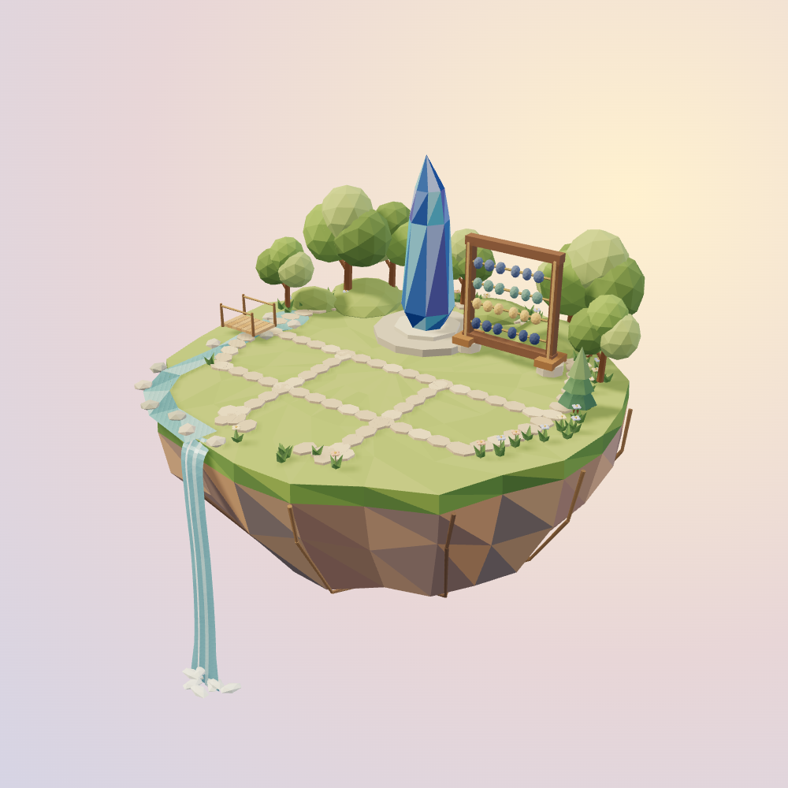
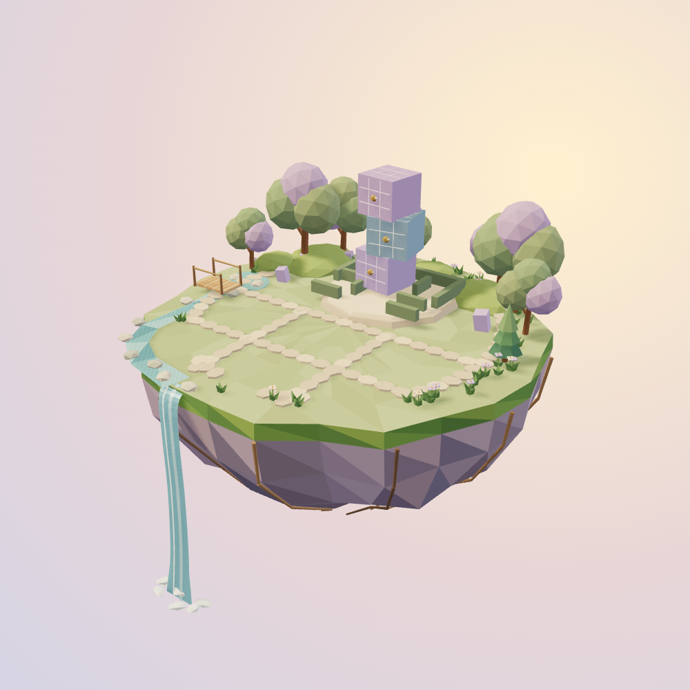
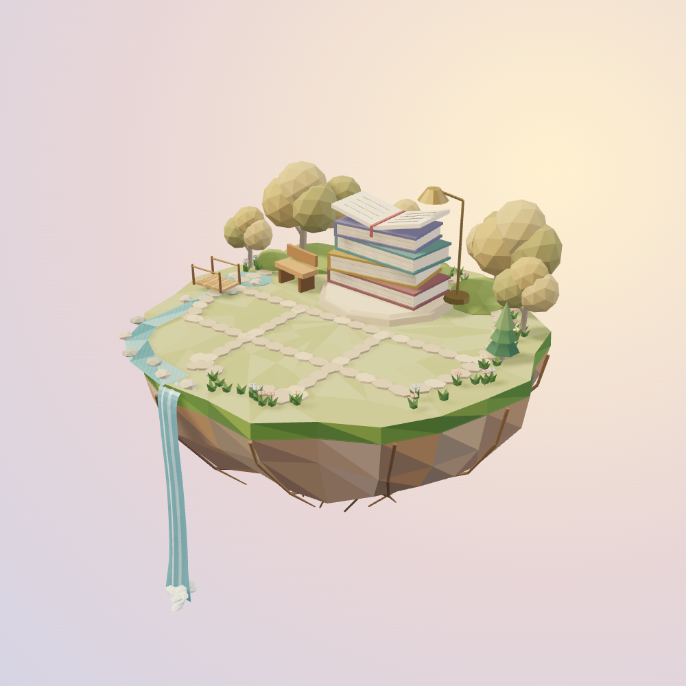
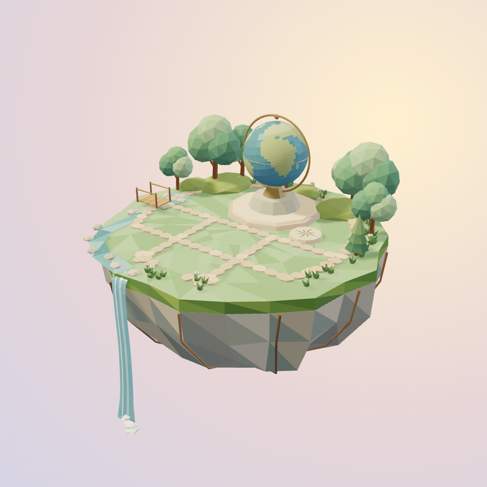
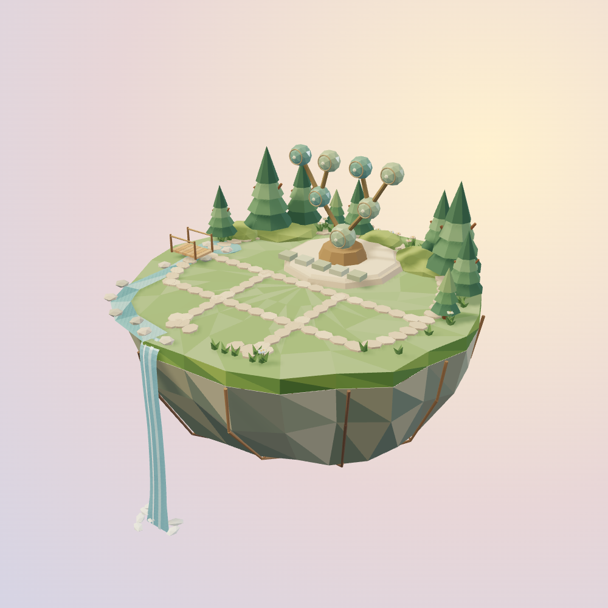
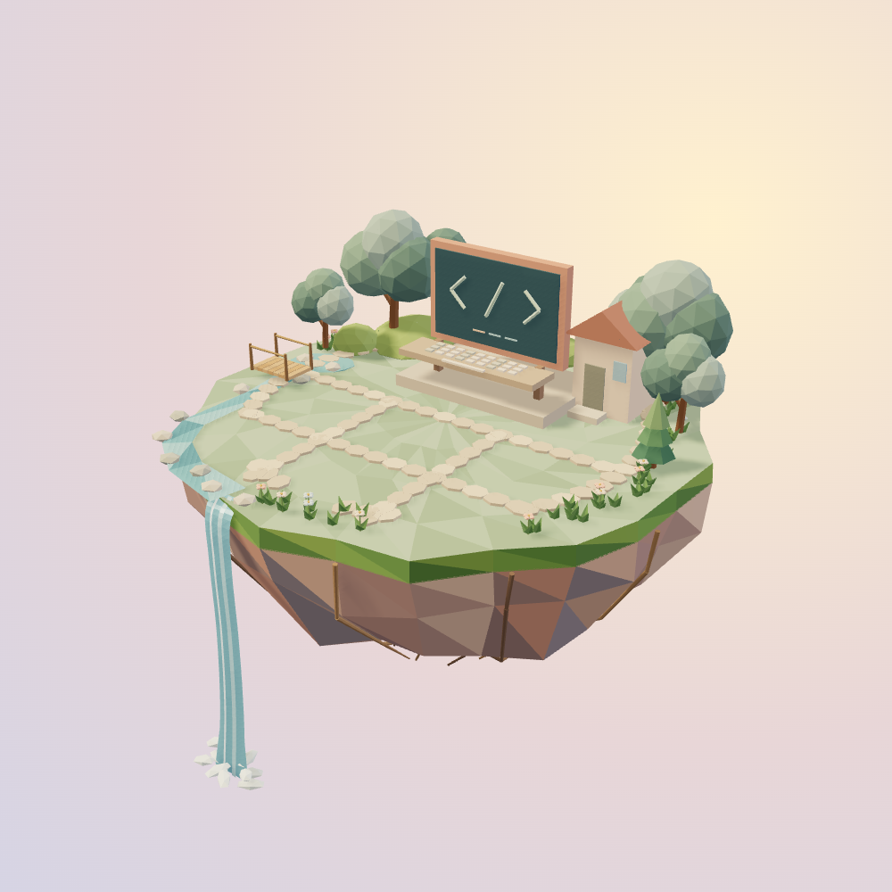
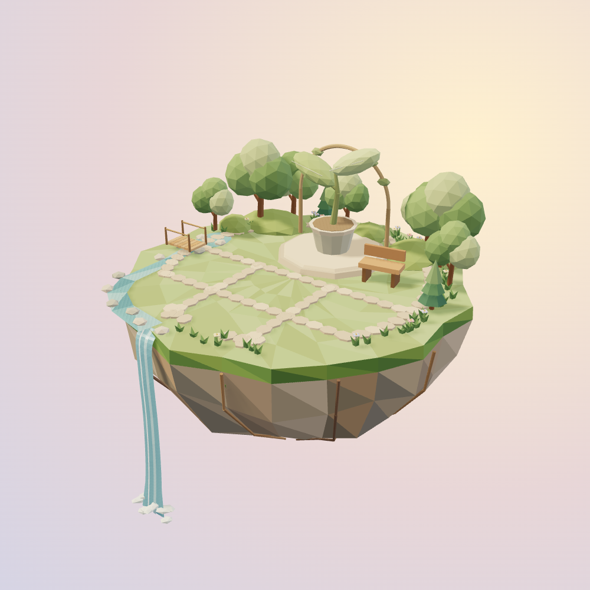

Mathematics
Approved crystal & abacus · mineral garden
Original, fully three-dimensional islands.
These are real renders
of the models used in the app—not painted mockups.

Approved crystal & abacus · mineral garden

Turning logic cubes · miniature hedge maze

Open-book library · warm autumn planting

Globe observatory · compass terrace

Binary-tree monument · evergreen grove

Code workbench · terracotta-roofed studio

Seedling arbor · welcoming learning grove
Shared, usable garden layout.
Distinct landmarks and planting.
Real
topic plots stay live in the app.
Custom subjects keep their own
theme.